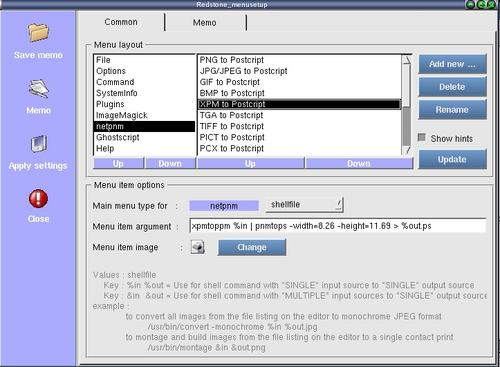

Setup menu items and execution commands

Step 1 : Pulldown the menu , do "Options"-->"Menu setup" to open up the menusetup dialog.
Step 2 : Delete,rename,add new and edit execution commands to suit your need.
Step 3 : Click "Apply settings" will bring up a save dialog for saving the edited menu settings.
Step 4 : Click "Close" to close the menusetup dialog.
Step 5 : After closing the setup dialog,the program will ask whether to update the
configuration and redraw the menu items.